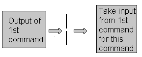

| Linux Shell Scripting Tutorial (LSST) v1.05r3 | ||
| Chapter 2: Getting started with Shell Programming | ||
| | ||
A pipe is a way to connect the output of one program to the input of another program without any temporary file.

Pipe Defined as:
"A
pipe is nothing but a temporary storage place where the output of one
command is stored and then passed as the input for second command.
Pipes are used to run more than two commands ( Multiple commands) from
same command line."
Syntax:
command1 | command2
Examles:
| Command using Pipes | Meaning or Use of Pipes |
| $ ls | more | Output of ls command is given as input to more command So that output is printed one screen full page at a time. |
| $ who | sort | Output of who command is given as input to sort command So that it will print sorted list of users |
| $ who | sort > user_list | Same as above except output of sort is send to (redirected) user_list file |
| $ who | wc -l | Output of who command is given as input to wc command So that it will number of user who logon to system |
| $ ls -l | wc -l | Output of ls command is given as input to wc command So that it will print number of files in current directory. |
| $ who | grep raju | Output of who command is given as input to grep command So that it will print if particular user name if he is logon or nothing is printed (To see particular user is logon or not) |
| | ||
| Redirection of Standard output/input i.e.Input - Output redirection | Filter | |